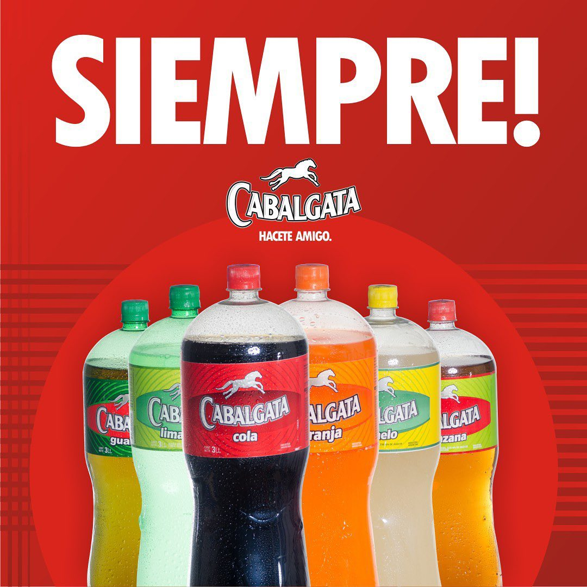

Desde Chaco a toda la región
Proba los mejores sabores de una bebida 100% Argentina
Nuestros Productos

Licores Nordeste Srl es una empresa que en base a su dinamismo y visión de crecimiento ha logrado un notable liderazgo en el rubro de las bebidas. La excelente ubicación de la planta, en el Nordeste Argentino, actúa como un punto estratégico no solo para la obtención de las mejores materias primas, sino también como una excepcional vía de acceso a los mercados internacionales. - Gaseosas, Aguas, Sodas, Jugos - Marcas: Cabalgata